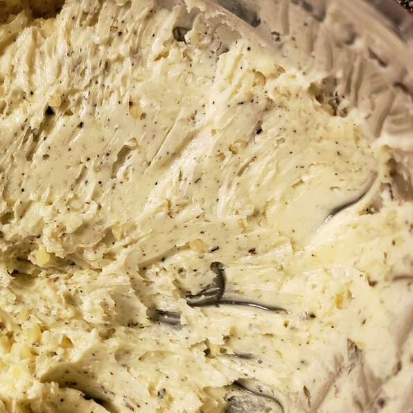

Garlic Butter

Description
Sometimes the basics are the best! I've used this simple recipe for years to make garlic bread, and any leftovers go great on barbequed steaks, pasta, rice or potatoes. You can use any butter or margarine you like. Also, fresh or minced garlic in a jar works well. Adjust the amount of garlic to your taste.
Ingredients
- 1 cup butter, softened
- 1 tablespoon minced garlic
- ¼ cup grated Parmesan cheese
- 1 tablespoon garlic salt
- 1 teaspoon Italian seasoning
- ½ teaspoon ground black pepper
- ¼ teaspoon ground paprika
Steps
- In a small bowl, combine softened butter, minced garlic and parmesan cheese. Season with garlic salt, Italian seasoning, pepper and paprika. Mix until smooth.